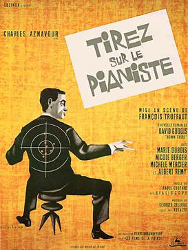

Shoot the Piano Player

François Truffaut
1960
92 minutes
Wikipedia link
IMDB link
This is text.
Time to choose something different:
- They shot a lot more than just piano players in the Holocaust... - Turn to section 167
- This was very...atmospheric. I can see why someone might be attracted to the dark glow of the mountains, or even the streetlights... - Turn to section 95
- Shooting the piano player seems a step too far. Could we maybe just bully the violinist instead? - Turn to section 48